건축설비산업기사 (2015-05-31 기출문제)
1과목: 건축일반
1. 석재 접합과 관련된 용어가 아닌 것은?
- 적층고무
- 은장
- 촉
- 반턱
(정답률: 77%)

2. 초고층 건축물의 구조시스템 종류와 가장 거리가 먼 것은?
- 쉘 구조시스템
- 튜브 구조시스템
- 가새 구조시스템
- 전단벽 구조시스템
(정답률: 63%)
3. 주거단위가 동일층에 한하여 구성되며 각층에 통로 또는 엘리베이터를 설치하는 아파트의 단면형식은?
- 플랫형(flat type)
- 스킵형(skip type)
- 트리플렉스형(triplex type)
- 메조넷형(maisonette type)
(정답률: 79%)
4. 사무소 건축 설계 시 고려사항 중 틀린 것은?
- 기둥은 등 간격으로 배치한다.
- 엘리베이터의 직렬 배치는 8대 이하로 한다.
- 주계단, 엘리베이터 홀은 주출입구에서 잘 보이는 곳에 배치한다.
- 1층 로비에서는 기둥이 동선을 방해하지 않도록 한다.
(정답률: 75%)
5. 도서관의 어린이 열람실 계획에 관한 설명 중 틀린 것은?
- 1층에 배치하고 출입구를 별도로 한다.
- 열람은 폐가식으로 운영한다.
- 실내구성은 각 연령층의 이용을 구분한다.
- 개가대출실과 독서실이 함께 구성되도록 한다.
(정답률: 88%)
6. 철근콘크리트 보에서 헌치(haunch)를 설치하는 목적은?
- 압축력에 대한 보강
- 인장력에 대한 보강
- 전단력에 대한 보강
- 휨응력에 대한 보강
(정답률: 56%)
7. 호텔건축의 기능적 분류에 해당되지 않는 것은?
- 요리부분
- 관리부분
- 사교부분
- 숙박부분
(정답률: 74%)
8. 철근콘크리트 부재에서 전단철근으로 볼 수 없는 것은?
- 부재축에 직각인 스터럽
- 주인장철근에 30°의 각도로 설치된 스터럽
- 나선철근
- 부재축에 직각으로 배치된 용접철망
(정답률: 70%)
9. 병원의 평면계획에 관한 설명으로 틀린 것은?
- 간호사 대기실은 엘리베이터홀 가까이에 둔다.
- 수술실, 물리치료실, 분만실은 병동부에 배치한다.
- 약국은 외래진료부와 주출입구와의 연락이 좋은 위치에 둔다.
- 병동부는 고층화해야 간호서비스가 능률적이다.
(정답률: 70%)
10. 초등학교 저학년에 가장 적합한 학교운영방식은?
- 달톤형
- 플래툰형
- 종합교실형
- 교과교실형
(정답률: 87%)
11. 종합병원에서 가장 많은 면적을 차지하는 부분은?
- 외래부
- 중앙진료부
- 관리부
- 병동부
(정답률: 85%)
12. 벽돌조에서 창문나비가 2.4m인 경우 인방구조는 어떻게 설치하는 것이 가장 합리적인가?
- 벽돌로 평아치를 쌓는다.
- 외부는 벽돌 세워쌓기, 내부는 평아치를 쌓는다.
- 철근콘크리트 인방보를 설치한다.
- 석재 인방보를 설치한다.
(정답률: 69%)
13. 상점에서의 측면판매에 대한 설명 중 틀린 것은?
- 상품에 대한 충동구매가 이루어 질 수 있다.
- 판매원의 정위치를 정하기 어렵고 불안정하다.
- 진열면적이 커지고 상품에 친근감이 있다.
- 포장이 편리하며 시계, 귀금속, 카메라 상점에서 일반적으로 사용된다.
(정답률: 86%)
14. 도서관 계획에 관한 설명 중 옳은 것은?
- 도서관은 건축적으로 확장 또는 변화에 순응할 수 있도록 유연성 있는 평면을 계획해야 한다.
- 서고와 열람실의 층고는 동일하게 하여야 한다.
- 계획초기부터 서고와 열람실의 위치를 분리계획하여야 한다.
- 서고는 인공조명보다 자연채광이 좋다.
(정답률: 64%)
15. 철근콘크리트 구조에서 철근의 피복두께 확보 목적으로 틀린 것은?
- 철근의 부식방지
- 철근의 수축방지
- 철근과의 부착력 확보
- 구조물의 내화성 확보
(정답률: 69%)
16. 기초판의 형식에 의한 기초의 분류에 속하지 않는 것은?
- 독립기초
- 복합기초
- 잠함기초
- 온통기초
(정답률: 73%)
17. 도서관에서 연구자가 일정기간 자료를 점유하여 이용 ㆍ 연구하기 위해 사용하는 독립적인 개실이나 객석을 무엇이라 하는가?
- 카트(cart)
- 알코브(alcove)
- 참고실(reference room)
- 캐럴(carrel)
(정답률: 67%)
18. 고층건물에 적용하는 커튼월에 대한 설명으로 틀린 것은?
- 건축물을 경량화 시킬 수 있다.
- 부분적인 프리패브리케이션이 가능하다.
- 공기단축이 어렵다.
- 가설비계의 사용을 절감할 수 있다.
(정답률: 72%)
19. 주택과 인간 욕구관계 중에서 제2차적 욕구(정신적 욕구)에 해당되지 않는 것은?
- 단란
- 유희
- 사색
- 휴식
(정답률: 68%)
20. 상점 특유의 독자성을 부여하기 위해 정면(facade) 구성에 필요한 5가지 광고 요소에 해당하지 않는 것은?
- Attention
- Inspire
- Desire
- Memory
(정답률: 75%)
2과목: 위생설비
21. 배관 중에 설치되어 흐르는 유체에 포함된 이물질을 제거하기 위해 사용되는 것은?
- 콕
- 트랩
- 안전밸브
- 스트레이너
(정답률: 88%)
22. 다음 중 급탕배관의 수평배관에서 상부가 불룩한 ⊓자형 배관을 피해야 하는 가장 주된 이유는?
- ⊓자형 배관은 미관상 보기가 흉하므로
- 열에 의한 팽창으로 파손되기 쉬우므로
- 급탕배관에서 ⊓자형은 공사하기가 어려우므로
- 물속의 공기가 분리되어 ⊓자형 배관부에 고여 온수의 순환을 저해하므로
(정답률: 82%)
23. 다음은 옥외소화전설비에 관한 설명이다. ( )안에 알맞은 것은?
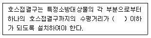
- 20m
- 30m
- 40m
- 50m
(정답률: 73%)
24. 오수처리방법 중 물리적 처리방법에 속하지 않는 것은?
- 소독
- 침전
- 교반
- 스크린
(정답률: 78%)
25. 간접배수방식을 하여야 하는 기기 및 장치에 속하지 않는 것은?
- 세면기
- 제빙기
- 세탁기
- 탈수기
(정답률: 72%)
26. 급수관내에 공기실(Air chamber)을 설치하는 이유는?
- 수압시험을 하기 위해서
- 누출시험을 하기 위해서
- 수격작용을 방지하기 위해서
- 배관의 신축을 흡수하기 위해서
(정답률: 87%)
27. 최대 방수구역에 설치된 개방형스프링클러헤드의 개수가 30개일 경우, 스프링클러설비의 수원의 저수량은 최소 얼마 이상이어야 하는가?
- 16m3
- 32m3
- 40m3
- 48m3
(정답률: 70%)
28. 특수통기방식 중 섹스티아 시스템에서 다음과 같은 역할을 하는 것은?
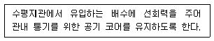
- 스트레이너
- 도피통기관
- 섹스티아 이음쇠
- 섹스티아 밴드관
(정답률: 70%)
29. 양수량이 10L/sec이고, 전양정이 50m인 펌프의 축동력은? (단, 펌프의 효율은 45%임)
- 8.7kW
- 10.9kW
- 11.2kW
- 12.3kW
(정답률: 62%)
30. 다음의 급수방식 중 일반적으로 하향급수 배관방식으로 배관하는 것은?
- 수도직결방식
- 고가탱크방식
- 압력탱크방식
- 펌프직종방식
(정답률: 89%)
31. 펌프의 흡입높이에 관한 설명으로 옳은 것은?
- 해발이 높아질수록 펌프의 흡입높이도 높아진다.
- 기압이 높아질수록 펌프의 흡입높이는 낮아진다.
- 펌프의 진공도가 낮을수록 펌프의 흡입높이는 높아진다.
- 물의 온도가 높아질수록 펌프의 흡입높이는 낮아진다.
(정답률: 54%)
32. 급수설비 설계시 사용되는 마찰저항선도에 나타나 있지 않은 항목은?
- 유속
- 유량
- 관경
- 기구급수부하단위
(정답률: 66%)
33. 중앙식 급탕방식에 관한 설명으로 옳지 않은 것은?
- 초기 투자비가 높은 단점이 있다.
- 배관에 의해 필요 개소에 어디든지 급탕할 수 있다.
- 급탕 개소가 적기 때문에 설비 규모가 작고 열손실이 적다.
- 시공 후, 기구 증설에 따른 배관 변경 공사를 하기 어렵다.
(정답률: 80%)
34. 급수관 도중에 설치하여 급수의 흐름을 조절하거나 개폐하는데 이용되는 밸브는?
- 팽창밸브
- 감압밸브
- 지수밸브
- 분수밸브
(정답률: 67%)
35. 흐르는 물에 피토(Pitot)관을 흐름의 방향으로 세웠을 때 수주의 높이가 1mAq 이었다. 유속은 얼마인가?
- 4.43m/sec
- 4.78m/sec
- 5.24m/sec
- 5.69m/sec
(정답률: 54%)
36. 다음 중 초고층건물의 급수방식 선정시 층수에 따라 수직적인 구획을 하는 가장 주된 이유는?
- 시설비를 감소하기 위해서
- 수압의 과다를 막기 위해서
- 필요한 수량을 확보하기 위해서
- 정전 등으로 인한 단수를 막기 위해서
(정답률: 70%)
37. 다음 중 배관의 신축 ㆍ 팽창량을 흡수 처리하기 위해 사용되는 신축이음에 속하지 않는 것은?
- 슬리브형 이음
- 벨로즈형 이음
- 플랜지형 이음
- 스위블형 이음
(정답률: 83%)
38. 도시가스 공급 방식은 고압, 중압, 저압으로 나눌 수 있는데, 중앙 공급 방식의 공급압력은?
- 0.1MPa 이상 1MPa 이하
- 0.1MPa 이상 10MPa 이하
- 1MPa 이상 2MPa 이하
- 1MPa 이상 10MPa 이하
(정답률: 83%)
39. 배수 계통에서 통기관을 설치하는 목적으로 옳지 않은 것은?
- 트랩의 봉수 보호
- 배수관내의 취기 배출
- 배수관내의 청결 유지
- 하수가스의 건물내 침입방지
(정답률: 59%)
40. 최대강우량 60mm/h의 지역에 있는 수평투영면적 1200m2의 건물에 4개의 우수배수수직관을 설치할 경우 알맞은 관경은?
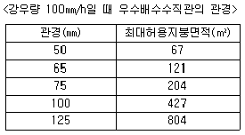
- 50mm
- 65mm
- 75mm
- 100mm
(정답률: 76%)
3과목: 공기조화설비
41. 온수난방에 관한 설명으로 옳지 않은 것은?
- 증기난방에 비하여 예열시간이 길다.
- 한냉지에서는 동결의 위험성이 있다.
- 일반적으로 증기난방에 비하여 방열기의 크기가 작다.
- 증기난방에 비하여 난방부하 변동에 따른 온도조절이 비교적 용이하다.
(정답률: 63%)
42. 마찰저항과 국부손실저항을 무시할 경우, 덕트의 단면적이 축소되거나 확대되더라도 변화가 없는 것은?
- 풍속
- 동압
- 정압
- 전압
(정답률: 57%)
43. 공기량 300kg/h, 절대습도 0.006kg/kg′인 공기를 0.012kg/kg′까지 가습하는 경우 필요한 공급 수량은?
- 0.9kg/h
- 1.8kg/h
- 2.7kg/h
- 3.6kg/h
(정답률: 58%)
44. 다음 중 환기공간과 배출 요소의 연결이 옳지 않은 것은?
- 전기실 - 열
- 화장실 - 분진
- 주방 - 수증기
- 주차장 - 배기가스
(정답률: 89%)
45. 어떤 유리창의 일사에 대한 반사율이 0.41, 흡수율이 0.29이다. 유리면에 닿는 일사량이 300W/m2일 때 유리 면적 10m2를 통해 투과되는 일사열량은?
- 80W
- 87W
- 900W
- 1230W
(정답률: 47%)
46. 다음과 같은 조건이 있는 사무실의 필요환기량은?
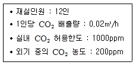
- 100m3/h
- 186m3/h
- 300m3/h
- 386m3/h
(정답률: 49%)
47. 냉각탑의 쿨링 어프로치(cooling approach)란?
- 냉각탑 입구수온(℃) - 냉각탑 출구수온(℃)
- 냉각탑 입구수온(℃) - 입구공기의 습구온도(℃)
- 냉각탑 출구수온(℃) - 입구공기의 습구온도(℃)
- 냉각탑 입구수온(℃) - 입구공기의 건구온도(℃)
(정답률: 55%)
48. 온수난방의 배관계통에서 물의 온도변화에 따른 체적 증감을 흡수하기 위하여 설치하는 것은?
- 컨벡터
- 감압밸브
- 팽창탱크
- 현열교환기
(정답률: 73%)
49. 유리의 일사부하 계산시 사용되는 유리창의 전차폐계수값이 기준값 1.0인 유리는? (단, 내부 차폐가 없는 경우)
- 보통 유리(두께 3mm)
- 흡열 유리(두께 3mm)
- 반사 유리(두께 3mm)
- 복층 유리(두께 12mm)
(정답률: 83%)
50. 길이가 10m, 내경 50mm인 원형관 속을 평균유속 2m/s로 물이 흐르고 있다. 관의 관마찰계수가 0.02일 경우 마찰손실은?
- 4kPa
- 6kPa
- 8kPa
- 10kPa
(정답률: 54%)
51. 다음과 같은 특징을 갖는 기계식 증기트랩은?
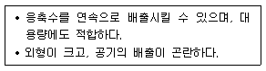
- 플로트 트랩
- 벨로즈 트랩
- 열동식 트랩
- 바이메탈 트랩
(정답률: 52%)
52. 터보식 냉동기에 관한 설명으로 옳지 않은 것은?
- 증기압축식 냉동기이다.
- 흡수식에 비해 소음 및 진동이 심하다.
- 왕복동식 냉동기로 설치면적을 적게 차지한다.
- 대용량에서는 압축효율이 좋고 비례 제어가 가능하다.
(정답률: 63%)
53. 펌프의 실양정을 Ha, 배관 손실수두를 Hf, 토출 및 흡입 속도수두를 Hw라 할 때 전양정 H는?
- H=Ha+Hf+Hw
- H=Ha+Hf-Hw
- H=Ha-Hf-Hw
- H=Ha-Hf+Hw
(정답률: 78%)
54. 다음 중 공조시스템을 조닝(zoning) 하는 이유와 가장 거리가 먼 것은?
- 설비비 절감
- 에너지 절감
- 방위별 대응
- 실내 열환경 제어 용이
(정답률: 61%)
55. 에어필터 효율측정법 중 투과지의 광투과량을 이용하는 방법은?
- 중량법
- 비색법
- 계수법
- DOP법
(정답률: 66%)
56. 냉각탑 또는 공기세정기에서 분무수가 외부로 유출되는 것을 방지하기 위해 설치하는 것은?
- 조집기
- 인젝터
- 스트레이너
- 엘리미네이터
(정답률: 74%)
57. 덕트의 아스팩트비(aspect ratio)의 정의로 옳은 것은?
- 4각덕트에서 면적과 장변의 비율
- 4각덕트에서 장변과 단변의 비율
- 원형덕트에서 단면적과 직경의 비율
- 원형덕트에서 풍량과 단면적의 비율
(정답률: 75%)
58. 냉방부하 계산시 잠열을 고려하여야 하는 요소는?
- 조명부하
- 외기부하
- 일사부하
- 재열부하
(정답률: 61%)
59. 다음과 같은 조건에 있는 증기난방 방식의 건물에서 보일러의 정격출력은?
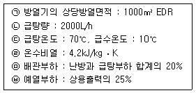
- 994.5kW
- 1344kW
- 1642.5kW
- 1760kW
(정답률: 55%)
60. 정풍량시스템에 비하여 변풍량시스템을 적용할 경우 설비기기의 용량을 작게 할 수 있는 이유로 가장 알맞은 것은?
- 침입외기의 영향을 적게 받기 때문이다.
- 외벽의 관류열부하가 감소하기 때문이다.
- 실내 토출공기의 혼합손실을 감소시키기 때문이다.
- 동시부하율을 고려하여 기기의 용량을 결정하기 때문이다.
(정답률: 70%)
4과목: 건축설비관계법규
61. 다음은 건축물의 에너지절약설계기준에 따른 기계부분의 의무사항 내용이다. ( )안에 알맞은 것은?
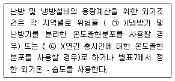
- ㉠ 1%, ㉡ 1.5%
- ㉠ 1.5%, ㉡ 1%
- ㉠ 1%, ㉡ 2.5%
- ㉠ 2.5%, ㉡ 1%
(정답률: 54%)
62. 건축물의 에너지절약설계기준상 외기에 직접 면하고 1층 또는 지상으로 연결된 출입문 중 방풍구조로 하지 않을 수 있는 출입문의 너비 기준은?
- 1.2m 이하
- 1.5m 이하
- 1.8m 이하
- 2.1m 이하
(정답률: 52%)
63. 다음의 특정소방대상물 중 위락시설에 속하지 않는 것은?
- 무도장
- 무도학원
- 안마시술소
- 카지노영업소
(정답률: 57%)
64. 다음의 소방시설 중 소화활동설비에 속하지 않는 것은?
- 제연설비
- 연결살수설비
- 옥내소화전설비
- 연결송수관설비
(정답률: 74%)
65. 6층 이상의 거실면적의 합계가 12,000m2인 업무시설에 설치하여야 하는 승용승강기의 최소 대수는? (단, 8인승 승강기의 경우)
- 4대
- 5대
- 6대
- 7대
(정답률: 66%)
66. 자동화재탐지설비를 설치하여야 하는 특정소방대상물에 속하지 않는 것은?
- 연면적이 600m2인 숙박시설
- 연면적이 1500m2인 공동주택
- 연면적이 1500m2인 판매시설
- 연면적이 1500m2인 교육연구시설
(정답률: 37%)
67. 신축하는 공동주택은 시간당 최소 몇 회 이상의 환기가 이루어질 수 있도록 자연환기설비 또는 기계환기설비를 설치하여야 하는가? (단, 100세대 이상의 공동주택의 경우)
- 0.5회
- 0.6회
- 1.0회
- 1.2회
(정답률: 77%)
68. 가스∙급수∙배수∙환기 설비를 설치하는 경우 건축기계설비기술사 또는 공조냉동기계기술사의 협력을 받아야 하는 대상 건축물에 속하지 않는 것은? (단, 해당 용도에 사용되는 바닥면적의 합계가 2000m2인 경우)
- 기숙사
- 숙박시설
- 판매시설
- 의료시설
(정답률: 47%)
69. 1급 소방안전관리대상물의 연면적 기준은?
- 10,000m2 이상
- 15,000m2 이상
- 30,000m2 이상
- 50,000m2 이상
(정답률: 56%)
70. 특별시나 광역시에 건축하려는 경우, 특별시장이나 광역시장의 허가를 받아야 하는 대상 건축물의 층수 기준은?
- 9층 이상
- 15층 이상
- 21층 이상
- 31층 이상
(정답률: 80%)
71. 다음은 건축물의 바깥쪽으로의 출구의 설치에 관한 기준 내용이다. ( )안에 알맞은 것은?
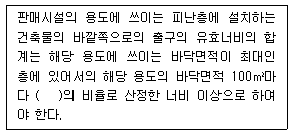
- 0.5m
- 0.6m
- 1.0m
- 1.2m
(정답률: 77%)
72. 건축법령상 다중이용 건축물에 속하지 않는 것은? (단, 16층 미만의 건축물로 해당 용도로 쓰는 바닥면적의 합계가 5000m2 이상인 건축물의 경우)
- 업무시설
- 종교시설
- 판매시설
- 의료시설 중 종합병원
(정답률: 64%)
73. 건축법령상 운수시설에 속하지 않는 것은?
- 주차장
- 항만시설
- 공항시설
- 여객자동차터미널
(정답률: 83%)
74. 다음은 비상조명등을 설치하여야 하는 특정소방대상물에 관한 기준 내용이다. ( )안에 알맞은 것은? (단, 창고시설 중 창고 및 하역장, 위험물 저장 및 처리 시설 중 가스시설은 제외)
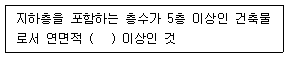
- 1,500m2
- 2,000m2
- 3,000m2
- 5,000m2
(정답률: 60%)
75. 건축물의 특별피난계단에 설치하는 배연설비의 구조에 관한 기준 내용으로 옳지 않은 것은?
- 배연구 및 배연풍도는 불연재료로 할 것
- 배연구는 평상시에는 닫힌 상태를 유지할 것
- 배연구가 외기에 접하지 아니하는 경우에는 배연기를 설치할 것
- 배연구 및 배연풍도는 화재가 발생한 경우 원활하게 배연시킬 수 있는 규모로서 평상시에 사용하는 굴뚝에 연결할 것
(정답률: 66%)
76. 건축물의 냉방설비에 대한 설치 및 설계기준상 다음 과 같이 정의되는 용어는?
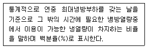
- 축열률
- 냉방률
- 수용률
- 이용률
(정답률: 81%)
77. 건축허가를 할 때 미리 소방본부장 또는 소방서장의 동의를 받아야 하는 대상에 속하지 않는 것은?
- 항공관제탑
- 연면적이 200m2인 수련시설
- 지하층이 있는 건축물로서 바닥면적이 50m2인 층이 있는 것
- 주차장으로 사용되는 시설로서 주차장으로 사용되는 층 중 바닥면적이 200m2인 층이 있는 시설
(정답률: 67%)
78. 건축물의 경사지붕 아래에 설치하는 대피공간에 관한 기준 내용으로 옳지 않은 것은?
- 특별피난계단 또는 피난계단과 연결되도록 할 것
- 관리사무소 등과 긴급 연락이 가능한 통신시설을 설치할 것
- 대피공간의 면적은 지붕 수평투영면적의 1/20 이상일 것
- 출입구는 유효너비 0.9m 이상으로 하고, 그 출입구에 는 갑종방화문을 설치할 것
(정답률: 63%)
79. 다음 설명에 알맞은 건축물의 종류는?
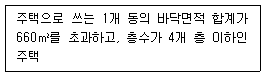
- 아파트
- 연립주택
- 다가구주택
- 다세대주택
(정답률: 74%)
80. 다음은 옥상광장 등의 설치에 관한 기준 내용이다. ( ) 안에 알맞은 것은?
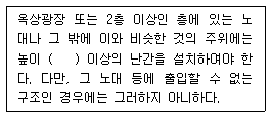
- 0.9m
- 1.2m
- 1.5m
- 1.8m
(정답률: 78%)